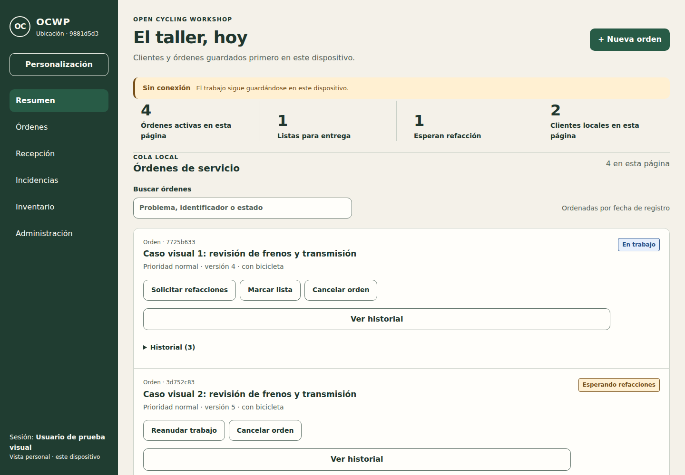
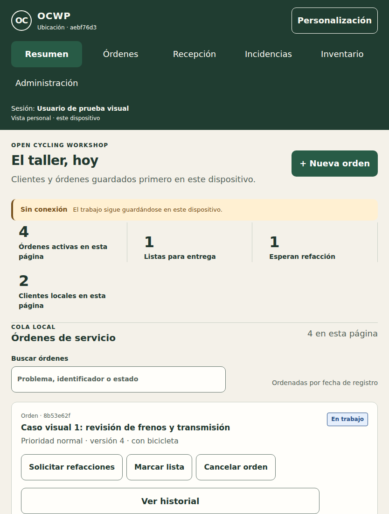
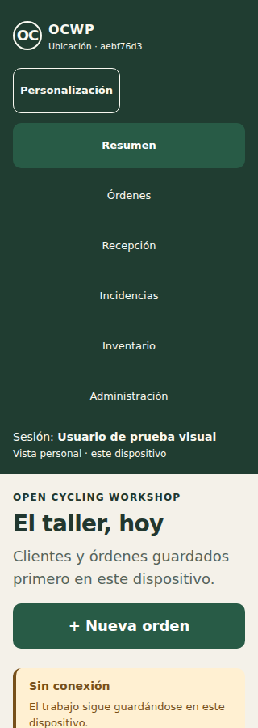
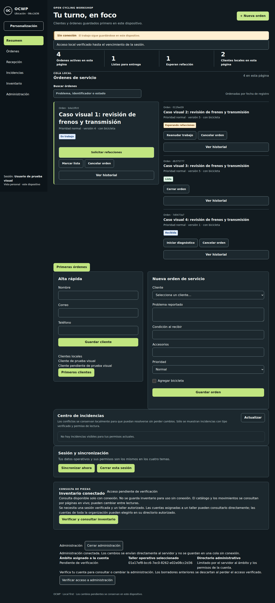

Trabajo cotidiano
Clientes, bicicletas y órdenes; borradores y diario local con sincronización y conflictos explícitos. La disponibilidad offline depende de la sesión, del contexto y de los datos admitidos previamente.
OPEN CYCLING WORKSHOP PLATFORM / EN DESARROLLO
Una plataforma abierta para organizar clientes, bicicletas y órdenes de servicio. Diseñada para trabajar cerca de tus datos, con independencia de proveedores y continuidad cuando la conexión falla.
01 / DEL MOSTRADOR AL BANCO DE TRABAJO
Para talleres, cooperativas, tiendas y equipos de servicio ciclista. El alcance disponible y el roadmap son distintos: no presentamos funciones futuras como terminadas.

a960bdd. No es un mockup ni un
taller en producción.
· Procedencia, dimensiones y hashes · Ejecución original de CI
Clientes, bicicletas y órdenes; borradores y diario local con sincronización y conflictos explícitos. La disponibilidad offline depende de la sesión, del contexto y de los datos admitidos previamente.
Cuentas, permisos y ubicaciones con validación del servidor. Inventario visible mediante lecturas conectadas: no se promete inventario offline ni una pantalla de cotizaciones.
Cuatro presentaciones visuales, preferencias personales y branding del taller. Arquitectura portable y servidor local sin servicios propietarios obligatorios.



No hay una release de producción, una instalación real validada, un catálogo de plugins instalables ni un flujo público de cotizaciones activado. Persistencia y reglas de dominio no equivalen a una API o una experiencia publicada. Streaming, cancelación, capacidad, recuperación y aceptación física conservan sus gates específicos.
Consultar estado y límites de evidencia ↗02 / UNA ARQUITECTURA QUE PUEDES ENTENDER
Monolito modular, no una colección de servicios obligatorios. El navegador preserva el trabajo local; el servidor aplica las reglas y la autoridad de los datos conectados.
Vite, temas y controles accesibles. apps/web/src
Repositorios, diario durable, contexto y conflictos. No todos los dominios están disponibles offline.
Sesiones, capabilities y scopes. Mutaciones idempotentes, baseline y cambios incrementales.
Datos conectados, auditoría y outbox interno. El outbox no es todavía una API pública de eventos.
Las respuestas y los cambios admitidos regresan al cliente. Los conflictos no se ocultan; no se borra IndexedDB como solución. Docker Compose es la base del servidor, no GitHub Pages.
Ver diagrama técnico y mapa de código ↗03 / ELIGE TU PUNTO DE ENTRADA
Revisa el alcance real, capturas y límites. Para un taller, identifica primero qué operación necesitas conservar offline y qué dispositivo usarás.
Empezar por el README ↗Clona el repositorio, usa Node y Python según los archivos fijados e instala con lockfiles. Lee las especificaciones antes de cambiar comportamiento.
Preparar el entorno y contribuir ↗Servidor local primero; luego calificación del dispositivo. Secretos fuera del repositorio, backup con restore probado y preservación independiente del diario de cada navegador.
Guía de runtime e instalación candidata ↗04 / CRECER SIN ROMPER LOS LÍMITES
La estrategia distingue código oficial revisado de componentes externos aislados. El SDK actual es un placeholder: esta es una ruta de evolución, no una promesa de instalación inmediata.
Integración explícita y revisada en build, bajo AGPL-3.0-only, con ownership, pruebas de contratos y migraciones. Ninguna capacidad nueva amplía automáticamente roles o grants existentes.
Procesos separados, API autenticada y permisos mínimos. Sin SQL directo ni acceso a IndexedDB; no ejecutar código comunitario arbitrario dentro del Core. Identidades de servicio y entrega pública de eventos aún requieren implementación.
05 / EL PROYECTO TAMBIÉN ES TUYO
Mecánica, diseño, documentación, traducción, accesibilidad y código: hay más de una forma de participar.
Incluye SHA/versión, dispositivo, pasos mínimos, resultado esperado/real y un ejemplo sintético. Elimina tokens, datos de clientes y registros privados.
Abrir un bug no sensible ↗¿Puede exponer usuarios o datos? No abras un issue público. Usa el mecanismo privado de advisories cuando esté disponible, o contacta a maintainers de forma privada.
Política de seguridad ↗